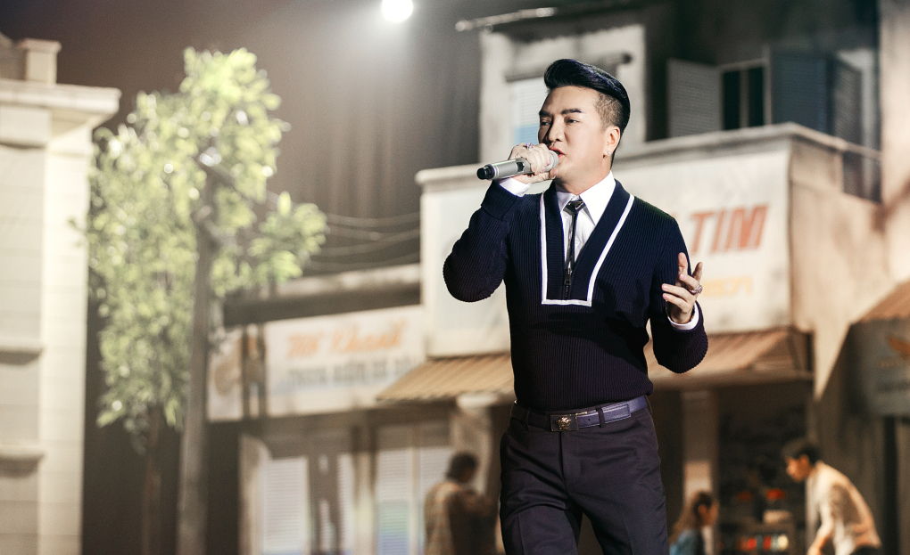

Nén đau do chấn thương ngã sân khấu, Đàm Vĩnh Hưng diễn "máu lửa" với gần 30 tiết mục ở liveshow bolero "Ngày em thắp sao trời".
Chương trình tối 4/5 tại thành phố Thủ Đức thu hút khoảng 1.500 khán giả. Suốt bốn giờ, Đàm Vĩnh Hưng níu chân mọi người đến tận khuya bằng sự sung sức, nhiệt huyết với âm nhạc làm nên thương hiệu anh.
Ca sĩ đưa người xem bước vào không gian những khu phố, dãy nhà, cầu thang chung cư chập hẹp, những cơn mưa bất chợt, gợi không khí hoài niệm. Anh hát khoảng 30 tiết mục, trong đó có 19 bản mashup ghép từ 62 ca khúc, và thay liên tục 20 trang phục. Đàm Vĩnh Hưng cho biết tự kết nối các bản mashup dựa nhiều các nhạc phẩm kinh điển. Các bài hát được hòa âm phối khí mới theo thể loại lo-fi (nổi tiếng vào thập niên 1990, chứa các yếu tố không hoàn hảo trong quá trình ghi âm), jazz, bosa nova..
Với liên khúc Tình có như không - Gặp nhau làm ngơ (Trần Thiện Thanh), Đàm Vĩnh Hưng thoải mái tung tẩy, có lúc nhảy chân sáo "phiêu" theo nhạc và nhóm bè. Hay có khi, anh đưa đêm nhạc trở lại chất tự tự với giai điệu da diết của Hỏi người còn nhớ đến ta (Hoàng Thi Thơ). So với liveshow Sài Gòn Bolero & Hưng 10 năm trước, Đàm Vĩnh Hưng chăm chút giọng hát, trưng trổ kỹ thuật hơn, khi lên những nốt cao trọn vẹn, lúc xuống những quãng bỏ nhỏ sâu lắng. Ở bài Mùa thu trong mưa (Trường Sa), anh tạo bất ngờ cho người xem khi ngồi trong xe hơi chạy ra sân khấu.
Tiết mục của khách mời cũng được đầu tư không kém. Ở mashup Giã từ đoạn buồn đêm mưa (Giã từ -Tô Thanh Tùng, Đoạn buồn đêm mưa - Chế Linh, Nửa đêm ngoài phố - Trúc Phương), Đàm Vĩnh Hưng và Trúc Nhân diễn tả câu chuyện tình buồn dưới cơn mưa khiến người xem thích thú. Hay trong tiết mục mashup Túp lều lý tưởng (Xây nhà bên suối, Ô kìa đời bỗng dưng vui - Hoàng Thi Thơ) của Dương Triệu Vũ, sân khấu được tạo hiệu ứng hình ảnh khu vườn địa đàng với hoa bay, bướm lượn bằng công nghệ mapping.
Dù chưa hồi phục hoàn toàn sau chấn thương ngã sân khấu hai tháng trước, ca sĩ giữ phong độ giọng hát và biểu diễn sung sức. "Tôi chịu đựng chân đau để tung tẩy với dòng nhạc trót đam mê hồi sáu tuổi đến nay", Đàm Vĩnh Hưng nói.
Một khán giả nước ngoài song ca một đoạn nhạc phẩm "Anh còn nợ em" (Nguyễn Anh Bằng) cùng Đàm Vĩnh Hưng.
Khán giả không ngừng reo hò, gọi tên ca sĩ. Đáp lại tình cảm của mọi người, Đàm Vĩnh Hưng xuống tận khán phòng mời họ hát cùng. Một fan người Mỹ đứng lên song ca cùng chủ nhân đêm nhạc ca khúc Anh còn nợ em (Anh Bằng). Phần trình diễn bất ngờ này nhận được sự cổ vũ nồng nhiệt của người xem. Nhiều bạn bè, đồng nghiệp đến ủng hộ ca sĩ như vợ chồng Cẩm Vân - Khắc Triệu, diễn viên Quyền Linh. Ca sĩ Quang Linh ngẫu hứng hát một đoạn trong bài Phút cuối (Lam Phương) cùng Đàm Vĩnh Hưng.
Ca sĩ Đàm Vĩnh Hưng, 53 tuổi, xác lập kỷ lục Việt Nam khi trình bày 19 mashup với 62 ca khúc bolero trong liveshow "Ngày em thắp sao trời". Ảnh: Team Kiếng Cận
Khác với những show trước của Đàm Vĩnh Hưng, lần này, sân khấu không dùng dàn led để đảm bảo tính mộc mạc cho từng khung cảnh. Ánh sáng được đầu tư cho từng phân đoạn để lột tả vẻ đẹp của khung cảnh sân khấu và cảm xúc của ca sĩ. Chương trình không có MC, khán giả được dẫn dắt từ một không gian này sang không gian khác bởi kỹ thuật chuyển cảnh nhờ vào hiệu ứng phông nền. Đạo diễn Trần Vi Mỹ cho biết sử dụng công nghệ kinetic (ứng dụng sự chuyển động cơ học của các vật thể), mapping, tạo mưa để đặc tả từng tiết mục.
"Có hơn 200 nhân viên ở hậu trường phối hợp nhịp nhàng, di dời đạo cụ để ca sĩ có thể thay trang phục nhanh chóng, sân khấu không bị 'chết' giây nào", đạo diễn nói.
Xem Ngày em thắp sao trời là show bolero cuối cùng trong con đường ca hát của mình, Đàm Vĩnh Hưng dành nửa năm chuẩn bị. Ca sĩ lên ý tưởng tái hiện không khí Sài Gòn xưa với hàng quán, xích lô, xe cộ ngay sảnh của sân khấu. Khán giả thích thú chụp hình cũng như thưởng thức những món ăn bình dân như xôi đậu đen, xôi gấc, hủ tiếu, bánh mì. Sân khấu được thiết kế như một rạp chiếu bóng với màn hình tivi kích thước 31m x 9m, đưa người xem ngược dòng thời gian về giai đoạn bolero thịnh hành.

Diễn viên Diễm My 9x - một khán giả của show, nhận xét: "Ngày em thắp sao trời khép lại hành trình 19 năm của Đàm Vĩnh Hưng dành cho dự án Dạ khúc cho tình nhân. Tuy nhiên, tôi tin ca sĩ vẫn còn có thể thỏa sức vùng vẫy với bolero bằng đam mê và sự phấn đấu không ngừng nghỉ". Còn khán giả Minh Lâm (35 tuổi, quận 3) nói: "Tôi ấn tượng với màu sắc rực rỡ của sân khấu, trang phục của ca sĩ, dàn vũ công, cũng như cảm nhận được sự thấm thía, trữ tình của dòng nhạc bolero".
Đêm thứ hai của Ngày em thắp sao trời diễn ra tại Hà Nội (ngày 18/5). Ngoài danh ca Lê Uyên, ca sĩ Dương Triệu Vũ, Trung Quân Idol, Uyên Linh, Trúc Nhân, show sắp tới có sự góp mặt của Mỹ Tâm.
Đàm Vĩnh Hưng, 53 tuổi, quê Quảng Nam, từng đoạt giải tư Tiếng hát truyền hình TP HCM năm 1998. Đầu thập niên 2000, ca sĩ gây chú ý loạt ca khúc nhạc trẻ như: Tình ơi xin ngủ yên, Bình minh sẽ mang em đi. Đàm Vĩnh Hưng ra mắt nhiều album: Hưng (2004), Dạ khúc cho tình nhân (2005), Tình ca hoài niệm (2006), Giải thoát (2007). Thử sức nhiều dòng nhạc, Đàm Vĩnh Hưng cho biết đam mê bolero, gắn bó thể loại này suốt 19 năm.